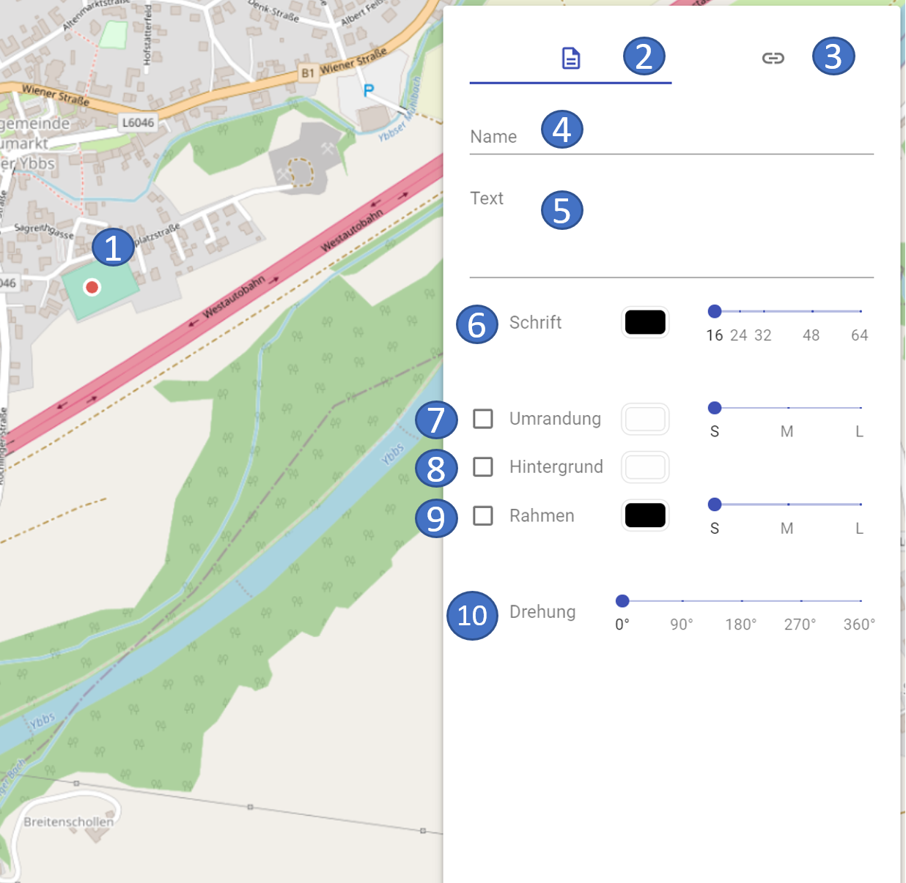

Freeform objects
Currently the following freeform objects are available in ODIN:
- Text field
- Line
- Area
Selection in the Map Palette
To create a Freeform object you have to select it in the Map Palette first. Enter the term "Supplemental " in the search area or use the search terms "Text", "Line" and "Polygon":

Text field
After the selection in the map palette and the click on the desired position on the map a "red dot " appears and the property window opens.
The following properties can currently be entered for the text field:
|  |  |
|---|---|
- 1 marked object on the map
-
2 current area properties
-
3 switch to the links/weblinks area
-
4 name of the object (= display in layer management)
-
5 Input of the text (= display on the map)
-
6 styling options for the font (color, font size)
-
7 styling options for the border (color, width)
-
8 styling options for the background (color)
-
9 styling options for the border (color, width)
-
10 rotation of the display of the text on the map
In the free text field, in addition to text input, emojis can be added (on Windows with the WINDOWS key + . or on MAC with CMD + CTRL + spacebar). Longer texts can also be divided into paragraphs with the ENTER key.
At Font the Color can be selected, as well as the Font size can be changed (to font size 16, 24, 32, 40, 48, 56, 64).
When Border is selected, a colored border can be added to the text. Here you can set the Color and the Width (Small, Medium, Large) of the border.
When you select the Background, the Fill color of the text box is set.
Selecting the Border will add a border to the text box. Here you can set the color and the width (Small, Medium, Large) of the frame.
With Rotation you can change the Alignment of the text field (each in 15 °-steps).
When selecting the colors a small window opens with the following choices:

- 1 selection of the color (by means of the mouse)
-
2 selection of color ranges (using the mouse)
-
3 transparency selection (using the mouse)
-
4 immediate display of the selection at the object on the map
To change the position of the free text field, click on it with the mouse on the left side of the text field and move it to the new desired position.
With the text field the same functionalities are possible as with the point symbols, i.e. "Offset Location " (hold down the ALT key and move the text field with the mouse), as well as Copy (CTRL + C) and Paste (CTRL + V) are also possible here.
Line
After the selection in the Map-Palette and the clicks on the desired positions on the map you finish the input with a double-click, after that the property window is opened.
The following properties can currently be entered for the freeform "Line":
 |
 |
|---|---|
- 1 marked object on the map
-
2 current area properties
-
3 switch to the links/weblinks area
-
4 name of the object (= display in layer management)
-
5 styling options for the line (color)
The choices for color styling are analogous to those for the width text field.
Area
After the selection in the map palette and the clicks on the desired positions on the map you finish the input with a double-click, then the property window opens.
The following properties can currently be entered for the freeform "Area":
 |
 |
|---|---|
- 1 marked object on the map
- 2 current area properties
- 3 switch to the Links/WebLinks area
- 4 name of the object (= display in layer management)
- 5 styling options for the frame (color)
- 6 styling options for the background (color)
The choices for the color selection are analogous to those for the width text field.